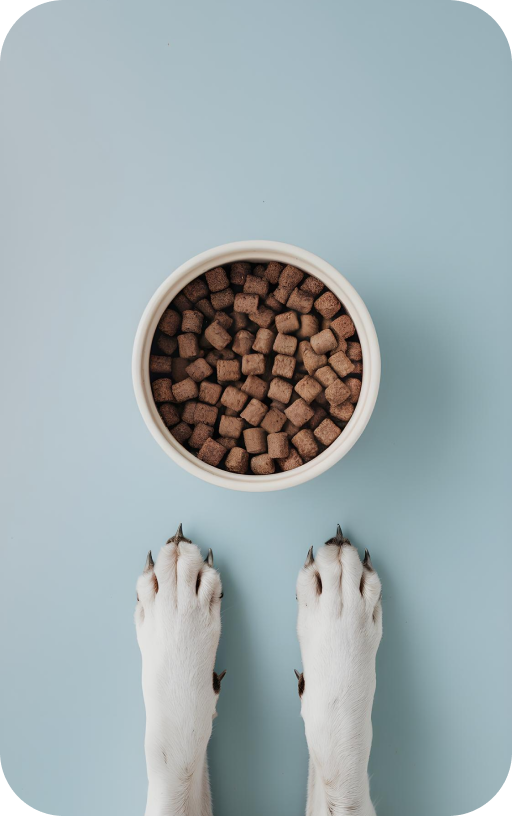

Food Snak Station

FOOD SNAK STATION
The Food Snak Station is an innovative feeding solution designed to make mealtime more enjoyable and engaging for your pet. It combines a slow feeder with a treat dispenser to promote healthier eating habits and provide mental stimulation.
$249.00
KEY FEATURES:
• Premium Quality Materials
Made from food-grade, BPA-free materials that are safe for your pet and easy to clean.
• Versatile Design
Dual-compartment design allows you to serve both dry food and treats in one convenient station.
• Encourages Healthy Eating:
Promotes slower eating habits by combining a slow feeder with a treat dispenser, reducing the risk of bloating.
• Mental Stimulation:
The treat dispenser feature adds an element of puzzle-solving, keeping your pet mentally engaged during meal times.
Why Choose Our Snak Station?
• Premium Quality Materials:
Made from food-grade, BPA-free materials that are safe for your pet and easy to clean.
• Versatile Design
Dual-compartment design allows you to serve both dry food and treats in one convenient station.
• Encourages Healthy Eating:
Promotes slower eating habits by combining a slow feeder with a treat dispenser, reducing the risk of bloating.